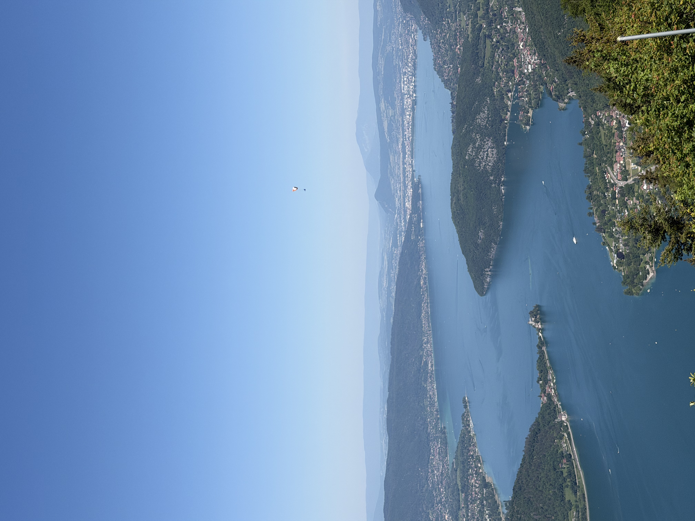

Il y a des points de vue qui portent bien leur nom. Au col de la Forclaz, on se gare, on marche trente secondes, et le lac d'Annecy s'étale d'un coup, tout entier, comme une virgule turquoise posée entre les montagnes. Trente secondes d'effort pour ça. Presque indécent.

cherchez le parapente, il a fait la photo sans le savoirLe col de la Forclaz est LE spot de parapente de la région : ça décolle en continu, des voiles partout, à tel point qu'on finit par ne plus les regarder. Sauf celle-là. Pile au moment où je cadrais le lac, un parapentiste est venu se placer exactement où il fallait dans le ciel. Je n'aurais pas pu le diriger mieux si j'avais essayé. Merci à lui, où qu'il soit.
avec toutes ces voiles en l'air, le drone est resté au sol ici, priorité aux humains volants.Pour voler, je me suis décalé plus tôt dans la journée, côté lac, loin des zones de décollage. À 12h13, l'eau était à son maximum de turquoise, ce bleu-vert laiteux que le lac fabrique avec ses fonds calcaires et que je croyais réservé aux lagons.
Et puis il y a eu la surprise de l'après-midi. Sur les hauteurs, planquée dans un repli de la montagne, une cascade : un fil d'eau qui tombe droit dans un cirque de roche moussue, invisible depuis la route, à peine indiquée. Le genre d'endroit qu'on trouve parce que quelqu'un du coin vous en parle à demi-mot.
Annecy en une journée, c'est donc ça : un lac couleur de lagon, un ciel plein de voiles, et une cascade secrète en bonus. Je comprends pourquoi personne ne veut repartir d'ici.